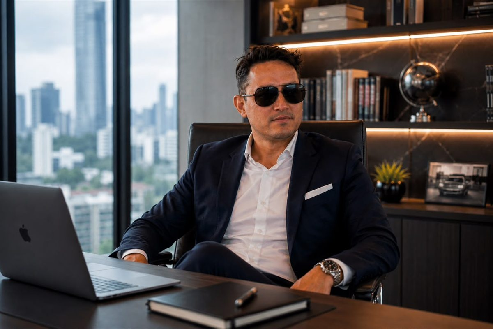

MC
María C.
17 jul 2026 · 11:20
Lo interesante del perfil es que el criterio se repite en dos sectores que no se parecen en nada. Eso dice más que cualquier discurso.
Su nombre aparece vinculado a dos proyectos de sectores distintos —la moda y la alimentación— que comparten un mismo criterio de gestión: ordenar la operación antes de crecer.

Alejandro Alfredo Londoño Guerrero participa en el proceso de transformación de LONDINGHANM, una marca de moda que avanza en una estrategia destinada a fortalecer su posicionamiento y consolidar una identidad más sólida dentro del ecosistema digital. En paralelo, forma parte de las iniciativas orientadas a robustecer la estructura organizacional de KEMONY, empresa de soluciones alimenticias con sede en Santo Domingo que trabaja en su expansión hacia distintas regiones del país.
Son dos sectores que poco tienen que ver entre sí. Y sin embargo, el criterio que se repite en ambos procesos es el mismo: antes de ampliar el alcance, hay que ordenar lo que ya existe.
En LONDINGHANM, la iniciativa contempla una revisión integral de la comunicación de la firma, la reorganización de sus canales de venta y el diseño de una estrategia enfocada en acompañar el crecimiento sostenido de la marca. El objetivo declarado es integrar cada una de esas áreas bajo una visión común que mejore la experiencia de quienes interactúan con sus productos.
Desde la empresa consideran que la evolución de una marca no depende únicamente de un cambio de imagen. También se manifiesta en la forma en que se comprende al público, se presentan los productos, se organizan las operaciones y se toman decisiones.
El posicionamiento no se construye con una publicación aislada, sino con una secuencia de acciones que permitan al público reconocer, recordar y confiar en la marca.Enfoque del proceso de LONDINGHANM

En KEMONY el planteamiento es equivalente, aunque el terreno sea otro. La compañía avanza en un proceso de expansión nacional apoyado en la optimización de sus operaciones, el fortalecimiento de su red de distribución y la consolidación de nuevos canales comerciales.
La expansión, según la propia empresa, no se limita a incrementar la cantidad de puntos de venta. Contempla el fortalecimiento de procesos internos, la mejora de la logística, la coordinación entre las distintas áreas operativas y la implementación de mecanismos que permitan sostener el crecimiento de forma organizada.
Alejandro Alfredo Londoño Guerrero acompaña ambos procesos desde una perspectiva empresarial centrada en la planificación y la constancia. La propuesta apunta a construir marcas reconocibles en el tiempo mediante acciones sostenidas que permitan generar cercanía, confianza y una relación duradera con los clientes.
En los dos casos, el objetivo es el mismo: pasar de una presencia comercial emergente a una estrategia consolidada, apoyándose en la creatividad, la organización y el comercio digital para ampliar el alcance y fortalecer el vínculo con nuevas audiencias.